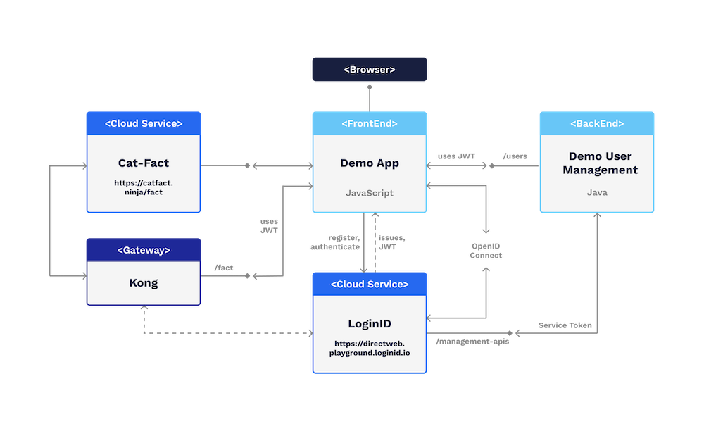

Tutorial
Here is a brief overview of the different features that are found behind each menu:
| Feature | Description |
|---|---|
| Authentication | This menu allows users to register and login to an application |
| Manage Authenticators | This menu provides a user with a simple interface to manage registered authenticators (devices) |
| Create Transaction Confirmation | This menu displays the Transaction Confirmation which uses a biometric digital signature to create a digital receipt for any given transaction such as a payment authentication. |
| Grant Request | This menu allows the user to authorize an authorization code that was generated on a different and potentially non-FIDO2 compliant device |
| Request Adding Authenticator | The menu enables a user to add additional authenticators (devices) to his account |
| Request Temporary Access | The menu enables a user to request temporary access to his account from a device that may not be owned by the user or which does not support FIDO2 |
| Integrations | The menu shows demos LoginIDs OpenID Connect integration and Kong plugin |
About
This tutorial is provided as an overview of features and tools that LoginID provides. It consists of a few docker images and used online services. It can be deployed on a local computer since it is available on GitHub.
The different components are built in java, javascript and take advantage of LoginID SDKs.
Tutorial layout
The image below gives an idea how the tutorial is laid out:
- The FrontEnd, BackEnd and Gateway are docker images
- The cloud services are public and are accessed via the demo
- The FrontEnd displays the web UI which is accessed via a browser
- The FrontEnd is configured with a Web App ClientID which it uses when registering/authenticating users
- The BackEnd exposes a simple management API and requires an authenticated user (valid JWT)
- The BackEnd is configured with a Backend / API Credential and is able to generate serviceToken that are required to access LoginID management APIs
- The Kong Gateway is configured with LoginIDs plugin to accept requests only if a valid LoginID issued JWT is included
Get in contact
To learn more about LoginID please visit: https://loginid.io
To view the developer documentation start here: Dev @ LoginID
Find this and more examples on GitHub: LoginID @ GitHub
Please find our privacy notice here!
Disclaimer: The hosted - online version of this tutorial is a shared environment and meant for evaluation purposes only.
tabContent